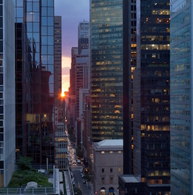

Midtown East
#brunch #indoor #bros #bbq #beer #epicview #drinks #rooftop #daytime #nighttime #historic #architecture #relaxing #unique #outdoor
Neighborhood Lowdown
While New York's Financial District is probably best known for the tall skyscrapers that dominate New York's Skyline, it's actually the multitude of corporations housed in Midtown East that comprise most of the head-turning buildings. In fact, even most financial institutions no longer operate out of FiDi but instead have offices here. While its a little more sterile than other NYC neighborhoods, most first year corporate workers will move here straight out of college to be close to work, which lends to some of the nightlife here.
Public Transit Service: 4,5,6,7
Cup of Joe

Too many places
Worker slaves need coffee! You'll find a decent coffee shop on just about any corner in this neighborhood.
Let's get started
Eat
Penelopes
#brunch #indoor
Cute brunch place with long lines-however, they take your number when you show up so that you can walk around the area until they call you. I've seen people wait in the rain to come eat here, so it must be pretty good!
Drink

Brother Jimmy's
#bros #bbq #beer
Affectionately known as Bro J's, this is where you'll have your true American cultural experiences. It's packed with ex-Frat Bros straight out of college, and they are attracted to Bro J's massive portions of mediocre Southern food and cheap, cheap pitchers of beer like bees to honey. There's also something called the Fish Bowl (see the picture) which I've never tried, but it pretty much looks like the most effective way to get a hangover ever.
Pod Hotel
#epicview #drinks #rooftop #daytime #nighttime
A stunning rooftop view that is just as good in the day time as it is at night. They don't do a full lunch up here in the daytime (only appetizers), but it tends to get pretty packed at night.
Play

Grand Central
#historic #architecture
Grand Central proves that travelling on a train was once a glamorous endeavor. A historical and architectural must-see.
Bryant Park
#relaxing #unique #outdoor
My favorite park in the whole city. Bryant Park provides a striking juxtaposition of nature and city. The openness of the space is highlighted by the surrounding skyscrapers, yet the size is small enough that it feels like an intimate suburbian park.
Recommended Trip
Brunch at Penelope's

Enjoy the sun and any outdoor events at Bryant Park
Wind down at Pod near sunset for a drink and some snacks
- liang.val63@gmail.com |
- 02.22.2015 |
- valpal23.blogspot.com |
- Home
This website is not intended for public viewing and all photos used are only temporary placeholders.